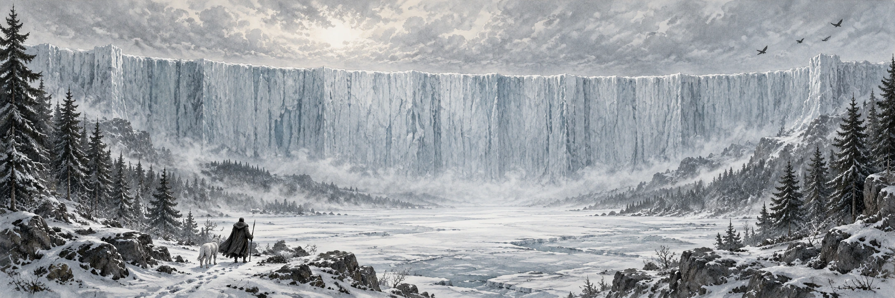

THEWALL
58° С. Ш.
ПОД ЗАЩИТОЙ СТЕНЫ
Северное
королевство
ПОД ЗАЩИТОЙ СТЕНЫ
Ночь темна.
Но огни ещё горят.
НАЧИНАЕТСЯ ЗДЕСЬ
Долгая ночь · огни дозора зажженыАТЛАС НОЧНОГО ДОЗОРА / 01
КАРТА СЕВЕРНЫХ ЗЕМЕЛЬНОЧНОЙ ДОЗОР
⌂ Свободное пристанище✓ Ваш выбор× ЗанятСвободные пристанища доступны для бронирования
На этой тропе пока нет подходящих пристанищ. Измените фильтры.
ВЫБЕРИТЕ СВОЮ ИСТОРИЮ
У каждого пристанища — своя легенда.
Не просто ночлег.
Место, с которого начнётся ваш поход.
VIII
ЗАПИСКИ ДОЗОРНОГО
Здесь не спрашивают,
откуда вы пришли.
Здесь подбрасывают дров в огонь. За окнами бродят белые волки, над башнями кружат вороны, а порой в облаках мелькает тень дракона.
Оставьте дорогу за порогом.
На эту ночь вы — дома.
II
ВАШ ПУТЬ НА СЕВЕР